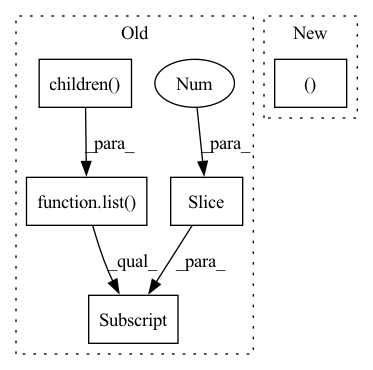

Pattern ID :21058
Before Change
The output layer of the network.
for layer in list(self.module.children())[::-1] :
if isinstance(layer, nn.Linear):
return layer
raise ValueError("No dense layer found.")After Change
tracker = ForwardOrderTracker(layers_to_track=(nn.Linear,))
apply_hooks(module=self.module, hook=tracker, handles=handles)
x_dummy = torch.empty((1, n_features ), device=self.device)
self.module(x_dummy)
for h in handles:In pattern: SUPERPATTERN
Frequency: 5
Non-data size: 5
Instances Fragment ID: 67698680
Project Name: online-ml/river-torch
Commit Name: 169b4cb582ec4cbe8b538ed27d5979a98a5131ed
Time: 2022-09-01
Author: cazzonelli@fzi.de
File Name: river_torch/classification/classifier.py
M Class Name: Classifier
N Class Name: Classifier
M Method Name: find_output_layer(2)
N Method Name: find_output_layer(1)
M Parent Class: DeepEstimator,base.Classifier
N Parent Class: DeepEstimator,base.Classifier
M File Name: river_torch/classification/classifier.py
N File Name: river_torch/classification/classifier.py
M Start Line: 285
M End Line: 288
N Start Line: 319
N End Line: 339
Before Change
self.key_features = nn.Sequential(
nn.BatchNorm2d(3),
*list(resnet.children())[:-1] ,
nn.Conv2d(last_conv_channels, num_ftrs, 1),
nn.AdaptiveAvgPool2d(1)
)After Change
self.features, self.projection_head = \
_get_features_and_projections(resnet, self.num_ftrs, self.out_dim)
self.key_features, self.key_projection_head = \
_get_features_and_projections(resnet, self.num_ftrs, self.out_dim)
// set key-encoder weights to query-encoder weights Fragment ID: 67698682
Project Name: lightly-ai/lightly
Commit Name: 7bf6d1f76805c31143238eeb3ce15b95f8faae53
Time: 2020-10-26
Author: philipp.m.wirth@gmail.com
File Name: lightly/models/moco.py
M Class Name: ResNetMoCo
N Class Name: ResNetMoCo
M Method Name: __init__(6)
N Method Name: __init__(6)
M Parent Class: nn.Module
N Parent Class: nn.Module
M File Name: lightly/models/moco.py
N File Name: lightly/models/moco.py
M Start Line: 40
M End Line: 67
N Start Line: 65
N End Line: 76
Before Change
):
super(EncoderCNN, self).__init__()
resnet: models.resnet.ResNet = get_resnet(resnet, pretrained_resnet)
original_modules: List[nn.Module] = list(resnet.children())[:-1]
modules: List[Union[nn.Module, nn.Dropout]] = [] // delete the last fc layer.
for layer_no, layer in enumerate(original_modules):
After Change
):
super(EncoderCNN, self).__init__()
self.cnn, self.cnn_output_size = get_cnn(
cnn_model_name=cnn_model_name, pretrained=pretrained_cnn
)
Fragment ID: 67698684
Project Name: ikergarcia1996/self-driving-car-in-video-games
Commit Name: 8892de53ec3531e889b504377dbd0212959f4958
Time: 2021-11-10
Author: igarciaf896@gmail.com
File Name: model.py
M Class Name: EncoderCNN
N Class Name: EncoderCNN
M Method Name: __init__(5)
N Method Name: __init__(6)
M Parent Class: nn.Module
N Parent Class: nn.Module
M File Name: model.py
N File Name: model.py
M Start Line: 187
M End Line: 204
N Start Line: 185
N End Line: 196
Before Change
// Layers
backbone = models.resnext50_32x4d(pretrained=True)
// Remove softmax layer at the end
backbone = nn.Sequential(*list(backbone.children())[:-1] )
self.model = Trainable(backbone,
name="backbone",
trainable=True)After Change
self.block4 = Trainable(backbone.layer4,
trainable=True,
name="block4")
self.avg_pool = nn.AdaptiveAvgPool2d((1, 1 ))
self.logits = Trainable(nn.Linear(2048, n_classes),
name="logits",
trainable=True) Fragment ID: 67698686
Project Name: velebit-ai/covid-next-pytorch
Commit Name: a95ed43a8ae00319255f288656a81b27a1d83d8f
Time: 2020-03-26
Author: bartol.freskura@velebit.ai
File Name: model/architecture.py
M Class Name: ResNext50
N Class Name: ResNext50
M Method Name: __init__(2)
N Method Name: __init__(2)
M Parent Class: nn.Module
N Parent Class: nn.Module
M File Name: model/architecture.py
N File Name: model/architecture.py
M Start Line: 14
M End Line: 17
N Start Line: 12
N End Line: 35
Before Change
self.features = nn.Sequential(
nn.BatchNorm2d(3),
*list(resnet.children())[:-1] ,
nn.Conv2d(last_conv_channels, num_ftrs, 1),
nn.AdaptiveAvgPool2d(1)
)After Change
super(ResNetSimCLR, self).__init__()
resnet = ResNetGenerator(name=name, width=width)
self.features, self.projection_head = _get_features_and_projections(
resnet, self.num_ftrs, self.out_dim)
Fragment ID: 67698679
Project Name: lightly-ai/lightly
Commit Name: 7bf6d1f76805c31143238eeb3ce15b95f8faae53
Time: 2020-10-26
Author: philipp.m.wirth@gmail.com
File Name: lightly/models/simclr.py
M Class Name: ResNetSimCLR
N Class Name: ResNetSimCLR
M Method Name: __init__(5)
N Method Name: __init__(5)
M Parent Class: nn.Module
N Parent Class: nn.Module
M File Name: lightly/models/simclr.py
N File Name: lightly/models/simclr.py
M Start Line: 36
M End Line: 51
N Start Line: 63
N End Line: 70